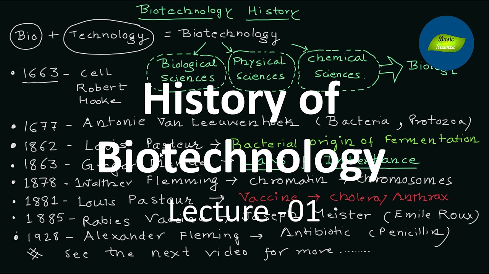

biotechnologyhistory
The history of biotechnology begins with zymotechnology,
which commenced with a focus on brewing techniques for beer.
By World War I, however, zymotechnology would expand to tackle
larger industrial issues, and the potential of industrial
fermentation gave rise to biotechnology.
